mysql学习笔记
mysql学习笔记
SQL语言
SQL语言通用语法
1.SQL语句可以单行或者多行来写，以分号结尾;
2.SQL语句可以使用空格或者缩进来增强语句的可读性
3.MySQL数据库的SQL语句不区分大小写，关键字建议使用大小写
4.注释：
- 单行注释：–注释内容，或者以#注释内容
- 多行注释：/* 注释内容* /
SQL语言的分类
1.根据其功能，主要分为四类：DDL(数据定义语言)、DML（数据操作语言）、DQL（数据查询语言）、DCL（数据控制语言）
| 分类 | 英文名称 | 说明 |
|---|---|---|
| DDL | Data Definition Language |
语句定义了不同的数据库、表、视图、索引等数据库对象， 访问权限还可以用来创建、删除、修改数据库和数据表的结构 |
| DML | Data Manipulation Language |
数据操作语言，用来对数据库表中的数据进行增删改 |
| DQL | Data Query Language | 数据查询语言，用来查询数据库中表的记录 |
| DCL | Data Control Language |
数据控制语言，用来创建数据库用户、控制数据库的 访问权限 |
DCL
1.定义：Data Control Language（数据控制语言），用来管理数据库用户、控制数据库的访问权限
管理用户（%代表通配符）
查询用户
1 | select * from mysql.user; |
创建用户
CREATE USER ‘用户名‘@’主机名’ IDENTIFIED BY ‘密码”;
修改用户
ALTER USER ‘用户名@’主机名’ IDENTIEIED WITH mysql native_password BY ‘新密码’;
删除用户
DROP USER ‘用户名’@‘主机名’
实际操作
创建用户abcd，只能够在当前主机localhost访问，密码123456；
1 | CREATE USER 'abcd'@'localhost' IDENTIFIED BY '123456' |
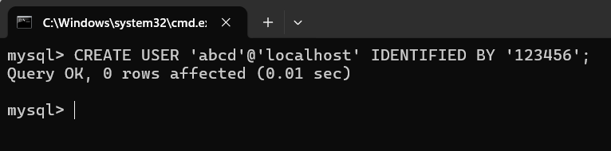
创建用户coder，可以在任意主机访问该数据库，密码123456；
1 | CREATE USER 'coder'@'%' IDENTIFIED BY '123456'; |
修改用户coder的访问密码为11111；
1 | ALTER USER 'coder'@'%' IDENTIFIED WITH mysql_native_password BY '111111'; |
删除abcd@localhost用户
1 | DROP USER 'abcd'@'localhost'; |
权限控制
1.一些基本常用权限
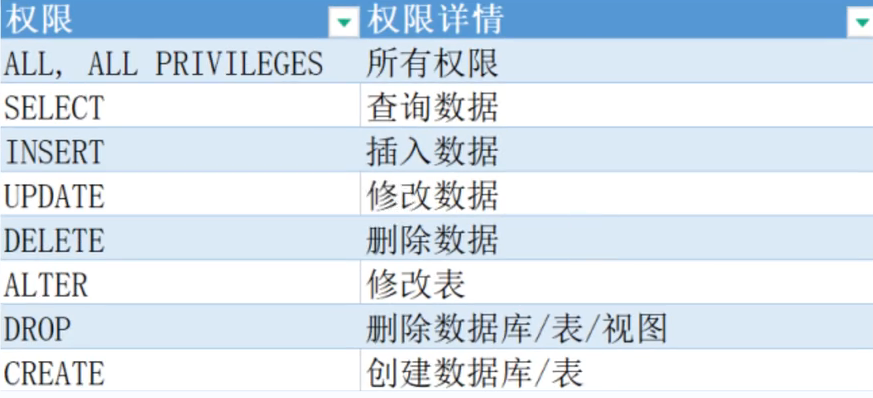
2.语法
查询权限
1
SHOW GRANTS FOR '用户名'@'主机名';
授予权限
1
GRANT 权限列表 ON 数据库名 表名 TO '用户名'@'主机名';
撤销权限
1
REVOKE 权限列表 ON 数据库名,表名 TO '用户名'@'主机名';
3.案例
- 查询‘abcd‘@%’用户的权限
1 | SHOW GARNTS FOR 'abcd'@'%'; |
- 授予‘coder‘@’%’用户abcd数据库所有表的所有操作权限
1 | GRANT al1 oN mysql.* To'coder'@'%'; |
- 撤销‘coder‘@’%’用户abcd数据的所有权限
1 | REVOKE all ON mysql.*FROM 'coder'@'%'; |
DDL
数据库操作
- 查看当前有哪些数据库
1 | SHOW databases;#查看哪些数据库 |
- 查询当前数据库
1 | SELECT database(); |
- 创建数据库
1 | create database [if not exists] 数据库名 [default charset 字符集][collate 排序 规则]; |
- 创建一个sycoder数据库，使用数据库默认的字符集
1 | CREATE database sycoder; |
- 创建一个isty数据库，并且指定字符集utf8
1 | CREATE database isty DEFAULT CHARACTER SET utf8mb4; |
注意：如果数据库存在，直接执行是会报错的
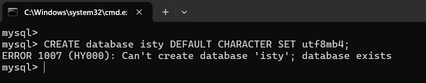
- 删除数据库
1 | drop database [ if exies] 数据库名; |
- 删除isty这个数据库
1 | DPRO DATABASE IF EXISTS isty; |
注意：当要删除的数据库不存在时，会报错，加上这个可选参数可以解决这个问题
1 | DROP DATABASE IF EXISTS isty; |
- 切换数据库
1 | use 数据库名 |
切换到sycoder数据库中
1 | USE sycoder |
表操作
- 查询当前数据库
1 | SELECT DATABASE(); |
- 查询当前数据库里所有表
1 | SHOW TABLES; |
- 查看指定表结构
1 | DESC 表名; #完整写法 DESCRIBE 表名; |
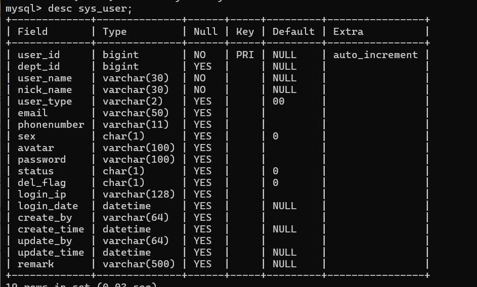
- 查询指定表的建表语句
1 | show create table 表名; |
- 创建表结构
1 | CREATE TABLE 表名( |
| id | name | age | gender |
|---|---|---|---|
| 1 | 张三 | 19 | 男 |
| 2 | 李四 | 21 | 男 |
1 | CREATE TABLE user ( |
修改
1.添加字段
1 | ALTER TABLE 表名 ADD 字段名 类型(长度) |
- 需求：给user表添加一个nickname字段，类型 varchar(10) ;
1 | ALTER TABLE user ADD nickname varchar(10) COMMENT '昵称'; |
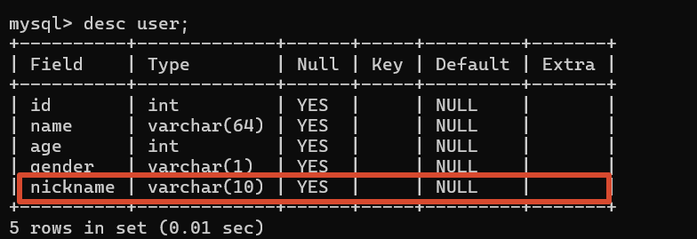
2.修改数据类型
1 | ALTER TABLE 表名 MODIFY 字段名 新数据类型(长度); |
需求：修改刚才的nickname数据类型为int(5);
1 | ALTER TABLE user MODIFY nickname int(5) comment '昵称新类型'; |
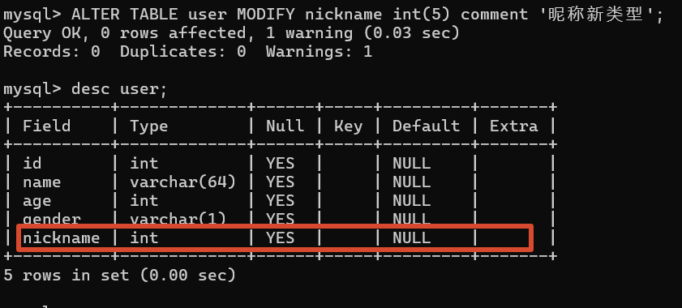
3.修改字段名和字段类型
1 | ALTER TABLE 表名 CHANGE 旧字段名 新字段名 类型(长度) |
- 需求：将nickname字段修改成address varchar(64)
1 | ALTER TABLE user CHANGE nickname address varchar(64); |
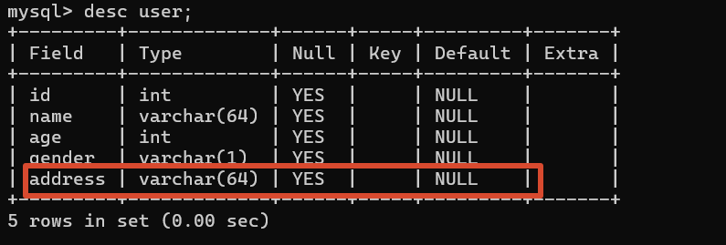
4.删除字段
1 | ALTER TABLE 表名 DROP 字段名; |
- 需求：将employee表的字段address删除
1 | ALTER TABLE user DROP address; |
5.修改表名
1 | ALTER TABLE 表名 RENAME TO 新表名; |
- 需求：将employee表的表名修改为emp
1 | ALTER TABLE employee RENAME TO emp; |
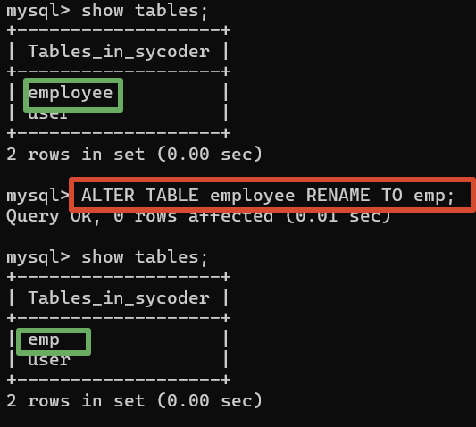
删除
1.删除表
1 | DROP TABLE [ IF EXISTS ] 表名; |
- 删除emp表
1 | DROP TABLE IF EXISTS emp; |
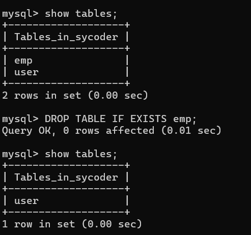
2.删除指定表，并重新创建表
1 | TRUNCATE TABLE 表名; |
DML
定义：Data Manipulation Language，数据操作语言（增删改）
1.添加数据（INSERT）
2.修改数据 （UPDATE）
3.删除数据（DELETE）
添加数据（INSERT）
1.给指定的数据添加数据
1 | 语法：INSERT INTO 表名(字段名1，字段名2，···) VALUES (值1，值2，···); |
- 案例：给employee表所有的字段添加数据。
1 | INSERT INTO employee(id, emp_name, gender) VALUES(1,'sy','男'); |
2.给全部字段添加数据
1 | 语法：INSERT INTO 表名 VALUES (值1，值2，···); |
- 案例：给employee表的所有字段添加数据。
1 | INSERT INTO employee VALUES(2,'zs','001','男','111','2022-02-01'); |
3.批量添加数据
1 | 语法： |
案例：批量插入数据到employee
1 | INSERT INTO employee(id, emp_name, entry_date) |
修改（UPDATE）
1.语法：UPDATE 表名 SET 字段名1 = 值1,字段名2 = 值2,……[WHERE 条件]；
1 | 语法：UPDATE 表名 SET 字段名1 = 值1,字段名2 = 值2,····[WHERE 条件]； |
- 案例：修改id为1的数据，将name修改为syy
1 | UPDATE employee SET username = 'syy' WHERE id = 1; |
- 案例：修改id为1的数据，将username修改为小明，gender修改为男
1 | UPDATE employee SET username = '小明'，gender = '男' WHERE id = 1; |
- 案例：将所有的员工入职日期修改为2018-02-01
1 | UPDATE employee SET entry_date = '2018-02-01'; |
注意：当不加WHERE条件的时候，默认是修改整张表
删除（DELETE）
1.语法：DELETE FROM 表名 [WHERE 条件]
1 | DELETE FROM 表名 [ WHERE 条件] |
- 案例：删除gender为男的员工
1 | DELETE FROM employee WHERRE gender = '男'; |
- 案例：删除所有员工
1 | DELETE FROM employee; |
注意：删除条件可以没有，没有默是删除整张表的数据，删除语句不能够去删除某一个字段的值，只能用修改语句实现
DQL
1.定义：Data Query Lauguage（查询数据库语言），数据查询语言，用来查询数据库中表的记录。
2.查询的关键字：SELECT
-
淘宝
京东
3.具体的业务使用中
-
- 分页
- 搜索
- 排序
- 条件
不带条件的查询，查询多个字段
1.语法：
1 | #查询指定字段的数据 |
- 案例：查询表中所有信息数据
1 | SELECT * FROM employee; |
- 案例：查询表中信命和性别这两个字段的信息
1 | SELECT name,gender from employee; |
查询字段设置别名
案例：查询表中姓名和性别这两个字段的信息，并且给中文别名
1 | SELECT name AS '姓名'，gender AS '性别' FROM employee; |
注意：AS是可以省略的
去除重复记录
1.语法：使用一个关键字DISTINCT
1 | SELECT DISTINCT 字段列表 FROM 表名; |
- 案列：查询员工的家庭住址（不要重复）
1 | SELECT DISTINCT address FROM employee; |
基础查询的案例
1.查询指定字段name，age并返回
1 | SELECT name ,age FROM employee; |
2.查询返回所有字段
1 | SELECT * FROM employee; |
3.查询所有员工的年龄，起别名
1 | SELECT age '年龄' FROM employee; |
4.查询公司员工的家庭地址有哪些（不要重复）
1 | SELECT DISTINCT address FROM employee; |
条件查询
1.语法：使用到where之后
1 | SELECT 字段列表 FROM 表名 WHERE 条件列表; |
运算符
比较运算符
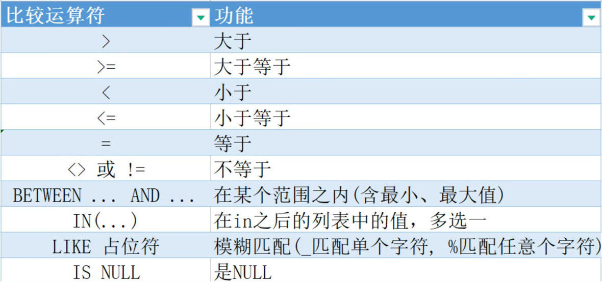
注意：
- java中的等于是使用 == 而mysql中的等于直接使用 =
- BETWEEN ···AND ···范围包含最小值和最大值
- IN(···)属于括号后的子集
- LIKE %表示通配符
- is null 表示空，非空 is not null
逻辑运算符
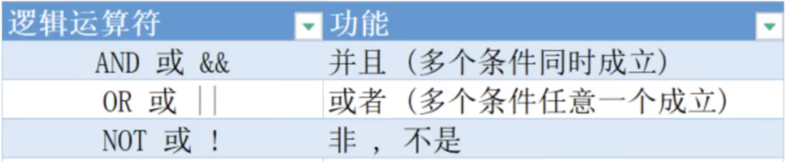
案例：查询年龄小于20并且idcard非空的
1 | SELECT * FROM employee where age < 20 and idcard is not null |
条件查询案例
- 查询年龄等于18的员工
1 | SELECT * FROM employee WHERE age == 18; |
- 查询年龄小于20的员工信息
1 | SELECT * FROM employee WHERE age < 20; |
- 查询年龄大于等于20的员工信息
1 | SELECT * FROM employee WHERE age > 20; |
- 查询没有身份证号的员工信息
1 | SELECT * FROM employee WHERE idcard is NULL; |
- 查询有身份证号的员工信息
1 | SELECT * FROM employee WHERE idcard is not null; |
- 查询年龄不等于18的员工信息
1 | SELECT * FROM employee WHERE age != 18; |
- 查询年龄在15岁（包含）到20岁（包含）之间的员工信息
1 | SELECT * FROM employee WHERE age BETWEEN 15 AND 20; |
- 查询性别为女且年龄小于23岁的员工信息
1 | SELECT * FROM employee WHERE age < 23 AND gender = '女'; |
- 查询年龄等于18或20或40的员工信息
1 | SELECT * FROM employee WHERE age in(18,20,40); |
- 查询姓名为两个字的员工信息 _%
1 | SELECT * FROM employee WHERE name like '__'; |
- 查询身份证件号
1 | SELECT idcard FROM employee; |
常用聚合函数
1.语法：SELECT聚合函数（字段列表）FROM表名：
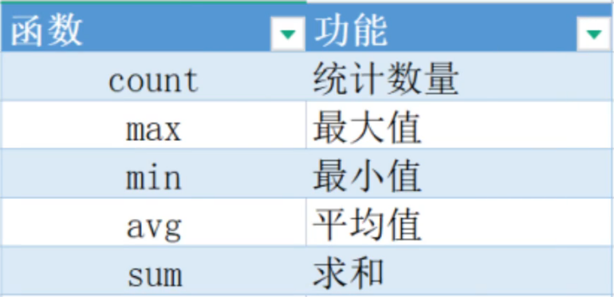
案例
- 统计企业员工的数量
1 | SELECT COUNT (id) FROM employee; |
- 统计企业员工的平均年龄
1 | SELECT AVG(age) FROM employee; |
- 统计企业员工的最大年龄
1 | SELECT MAX(age) FROM employee; |
- 统计企业员工的最小年龄
1 | SELECT MIN(age) FROM employee; |
- 统计家庭是杭州员工的年龄之和
1 | SELECT SUM(age) FROM employee WHERE address = '杭州'; |
分组查询
1.语法：(GROUP BY)
1 | SELECT 字段列表 FROM 表名 [ WHERE 条件 ] GROUP BY 分组字段名 [ HAVING 分组后过滤条件 ]; |
2.WHERE 和HAVING 的区别
执行时间不同，WHERE 是分组之前执行，不参与分组，HAVING是分组之后执行。
判断条件不同，WHERE是不能对聚合函数做判断的，HAVING是可以的。
3.注意：
分组之后，查询的字段一般为聚合函数和分组字段，查询其它字段没有意义；
执行顺序：WHERE > 聚合函数 > HAVING
可以支持多字段分组 GROUP BY COLUM1，COLUM2;
案例
- 根据性别分组，统计男性员工和女性员工的数量
1 | SELECT gender,count(id) from employee GROUP BY gender; |
- 根据性别分组，统计男性员工和女性员工的平均年龄
1 | SELECT gender,avg(age) from employee GROUP BY gender; |
- 查询年龄小于45的员工，并根据家庭地址分组，获取员工数量大于等于3的家庭地址
1 | SELECT address, COUNT(*) AS num |
- 统计各个家庭地址上班男性和女性的数量
1 | SELECT gender,count(*) '数量' ，address |
- 每个地址一行，分别显示男女人数（更常用于报表）
1 | SELECT address, |
排序查询
1.语法
排序方式
- 升序：
ASC（默认就是升序） - 降序：
DESC
- 升序：
SELECT 字段列表 FROM 表名 ORDER BY 字段1 排序方式1, 字段2 排序方式2;1
2
3
4
5
6
7
8
###### 案列
- 根据年龄对公司的员工进行升序排序
```sql
SELECT * FROM employee ORDER BY age;
SELECT * FROM employee ORDER BY age ASC;根据入职时间，对员工进行降序排序
1
SELECT * FROM employee ORDER BY entrdate DESC;
根据年龄对公司的员工进行升序排序，年龄相同，再按照入职时间进行降序排序
1
SELECT * FROM employee ORDER BY age ASC, entrdate DESC;
分页查询
1.语法（LIMIT）
1 | SELECT 字段列表 FROM 表名 LIMIT 起始索引,查询记录; |
2.注意
- 起始索引从0开始，起始索引 = (查询页面-1) * 每页显示的记录数
- LIMIT 是MYSQl中的实现
- 如果只查询第一页数据，起始索引是可以省略的，LIMIT 5;
案列
- 查询第一页员工数据，每页展示5条记录
1 | SELECT * FROM employee limit 0,5; |
- 查询第2页员工数据，每页展示5条记录
1 | #(查询页面 -1) * 页码显示页数 |
执行优先级
标准 SQL 执行顺序（MySQL 完全遵循）
1 | 1. FROM -- 先确定从哪张/哪些表查 |
这个执行顺序与SQL语句的书写顺序不同：
SQL语句通常写作：
SELECT ... FROM ... WHERE ... GROUP BY ... HAVING ... ORDER BY ... LIMIT ...但实际执行时是按照上述优先级顺序执行的
案例验证
查寻年龄年龄大于15的员工姓名、年龄，并根据年龄进行升序排序。
1 | SELECT emp.name eName ,emp.age aAge from employee emp WHERE emp.age > 15 GROUP BY eAge |
- 执行先后
1 | from ... where ... group .... having ... select ... order by ... limit |
- 先确定数据来源（FROM）
- 然后过滤数据（WHERE）
- 接着分组（GROUP BY）
- 再选择字段（SELECT）
- 对分组后的结果进行过滤（HAVING）
- 最后排序和分页（ORDER BY + LIMIT）
函数
常用的函数
-
- count
- sum
- min
- max
数值函数
1.做数值运算的
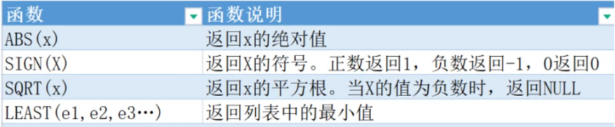
2.演示
1 |
字符串函数
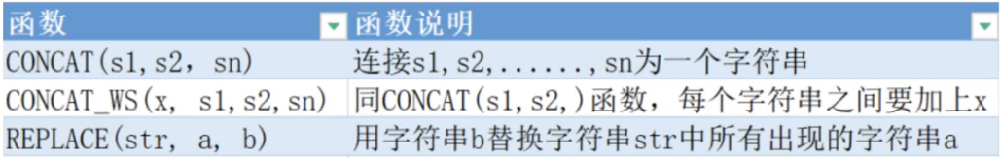